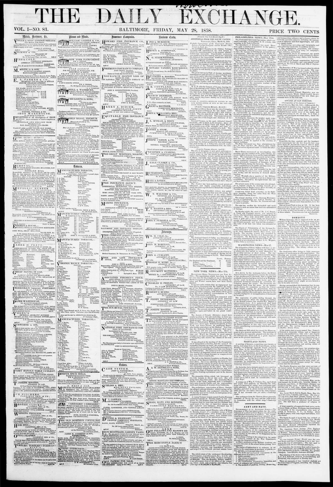

Jago gov ernment, which has the harbors of Port au Plate
https://www.loc.gov/resource/sn83009573/1858-05-28/ed-1/?sp=1

See the original pageVer la página original
Following the expiration of a deadline, a bombardment of Port au Plate commenced, though fire from the fort forced the attackers out of range. The St. Jago government stated it would seek foreign aid before yielding to Baez, whose fleet's movements were favored by English and French consuls, leaving the United States as the sole government to depend upon. Additionally, the American schooner Wing of the Wind successfully ran the blockade with a cargo from New York on the 27th, while the U.S. Consul at St. Domingo, Mr. Elliott, remained imprisoned in his house for fear of his life without the presence of U.S. warships.
Expirado el plazo otorgado, dio principio el cañoneo sobre Puerto Plata, aunque la réplica de artillería del fuerte obligó a los atacantes a retirarse fuera de tiro. El gobierno radicado en Santiago previno que antes recabaría auxilio foráneo que someterse a Báez, a cuyos buques amparaban los cónsules británico y francés, restando Estados Unidos como el único amparo confiable. Asimismo, la goleta estadounidense Wing of the Wind burló el bloqueo con cargamento de Nueva York el día 27, en tanto el cónsul norteamericano en Santo Domingo, Sr. Elliott, permanecía encerrado en su morada temiendo por su vida ante la ausencia de buques de guerra de su nación.
Where this standsEn qué punto está
The full text of this article is still being prepared. Until it is ready, this page carries a summary, the passage found on the page, and the link to the original, which is always one click away.El texto completo de este artículo aún se está preparando. Hasta que esté listo, esta página lleva un resumen, el pasaje encontrado en la página y el enlace al original, que siempre está a un clic.
The passage this summary was written fromEl pasaje del que se escribió este resumen
The passage where this article was found, copied from the newspaper page itself, reading errors and all. This is exactly what the summary above is based on.El pasaje donde se encontró este artículo, copiado de la propia página del periódico, con sus errores de lectura y todo. Esto es exactamente aquello en lo que se basa el resumen de arriba.
Meanwhile the time expired, and the bombard
ment commenced; but the lire from the fort soon
drove them off beyond the reach of shot or shell.
No one thinks of surrendering the town, even if the
last house should be destroyed. The St. Jago gov
ernment, which has the harbors of Port au Plate
and Monte Christi, before they will yield to the
outlaw Baez, wilt call in the aid of every foreign
power; and under pressing circumstances, as the
English and French consuls favor the cause of
Baez—which is evident from the sailing of the fleet
i of liaez from St. Domingo City, against Port au
Plate and to harrass the coast—the United States
is the only government to be looked to or to be de
i pended upon.
The same correspondent, (who is not an Arneri
can citizen,) under same date, in aP. S.. adds that
I the effects of the bombardment are already visible
I at Port au Plate, flour being S2O per barrel, and all
j other articles of common consumption in proper
I tion. The American schooner "Wing of the Wind"
ran the blockade on the 27th ult., anil got safely in
j with a cargo from New York, but was tired at and
I chased by the Dominican war schooner Cleopatra,
j The success of the "Wing of the Wind" was a tine
I achievement of her captain.
j While these things are being enacted at Port au
Plate, and while the U. S. Consul at the citv of St.
I Domingo, (Mr. Elliott) is imprisoned in his own
house literally, as he cannot, for fear of his life, go
into the street, the United States has no ships of
war either at the city or off Port au Plate! Surely
How to cite this articleCómo citar este artículo
The Daily Exchange. (1858). Baltimore, Md., May 28, 185828 de mayo de 1858. DR in the American PressRD en la Prensa Norteamericana. Library of Congress, Chronicling America: https://www.loc.gov/resource/sn83009573/1858-05-28/ed-1/?sp=1
ReferencesReferencias
Library of Congress, Chronicling America: The Daily Exchange, May 28, 185828 de mayo de 1858.
Send an observationEnviar una observación
Does this article connect with your family, your town, or something you know? Did we get something wrong? Write to us. Observations go to the editor's inbox and are read by a person.¿Este artículo conecta con su familia, su pueblo o algo que usted conoce? ¿Nos equivocamos en algo? Escríbanos. Las observaciones llegan al buzón del editor y las lee una persona.
Send observationEnviar observación